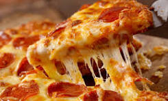

Pizzas:
-
Pizza Margarita
Tomate, mozzarella y albahaca.
-
Pizza Pepperoni
Tomate, mozzarella y pepperoni.
-
Pizza Hawaiana
Tomate, mozzarella, jamón y piña.
-
Pizza Vegetariana
Tomate, mozzarella, champiñones, pimientos y aceitunas.
-
Pizza Barbacoa
Tomate, mozzarella, carne de res, cebolla y salsa barbacoa.
-
Pizza Cuatro Quesos
Mozzarella, gorgonzola, parmesano y queso de cabra.